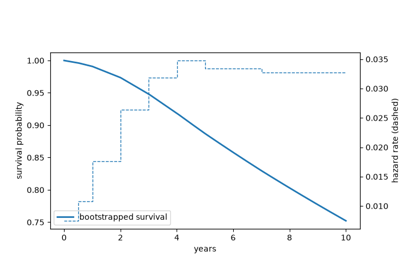
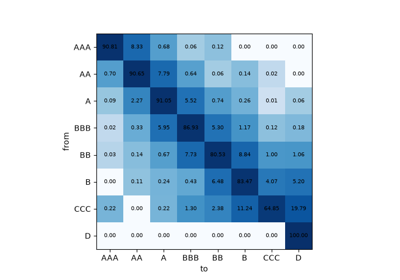
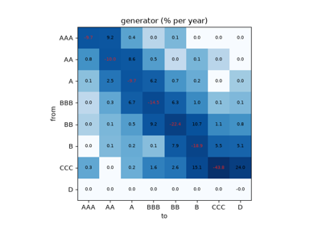
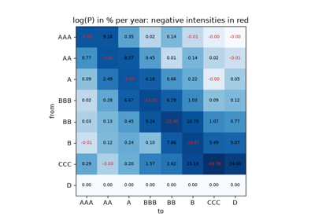
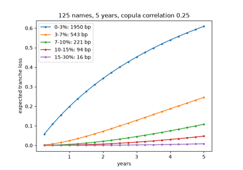
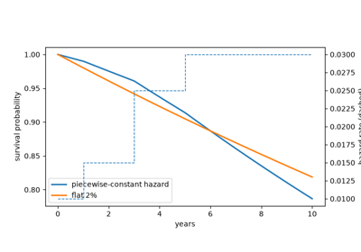
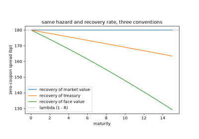
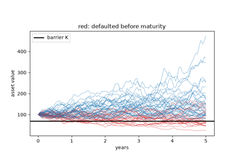
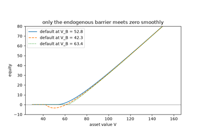

Examples#
This gallery walks through every public feature of financialkit.credit:
Altman’s Z-score; Merton’s structural model, Black-Cox first passage,
Leland’s endogenous default and the KMV distance to default; hazard
rates and recovery conventions; CDS pricing and hazard bootstrapping;
rating migration with CreditMetrics and generator matrices; and
portfolio credit risk with Vasicek’s large pool, CreditRisk+, Li’s
copula, the Basel IRB formula and CDO tranches.
See also the narrative tutorial:
Each script in this gallery is self-contained and can be run directly with
python examples/credit/<section>/<script>.py.
Sections#
scoring – Altman’s Z-score.
structural – Merton, Black-Cox, Leland and the distance to default.
reduced_form – Jarrow-Turnbull hazard rates and Duffie-Singleton recovery of market value.
cds – the CDS par spread and the ISDA hazard bootstrap.
migration – CreditMetrics, generator matrices and the Israel-Rosenthal-Wei regularization.
portfolio_loss – Vasicek’s large pool, CreditRisk+, Li’s Gaussian copula, the Basel IRB formula and tranche expected losses.
Credit default swaps#
Pricing protection, and reading default probabilities off quotes.

The ISDA standard model: bootstrapping hazard rates
Rating migration#
Transition matrices in discrete and continuous time.

CreditMetrics: credit VaR from rating migrations

Jarrow, Lando and Turnbull: generator matrices

Israel, Rosenthal and Wei: finding a valid generator
Portfolio losses#
Correlated defaults, loss distributions, regulatory capital and tranches.

Hull and White: pricing CDO tranches without Monte Carlo
Reduced-form models#
Default as the first jump of an intensity, and what is recovered.

Jarrow and Turnbull: hazard rates and survival curves

Duffie and Singleton: recovery of market value
Scoring#
Telling failing firms from survivors with accounting ratios.
Structural models#
Default as an option on the firm’s assets: at maturity, at a barrier, or when shareholders choose.

Black and Cox: default at the first passage

Leland’s endogenous default and optimal leverage